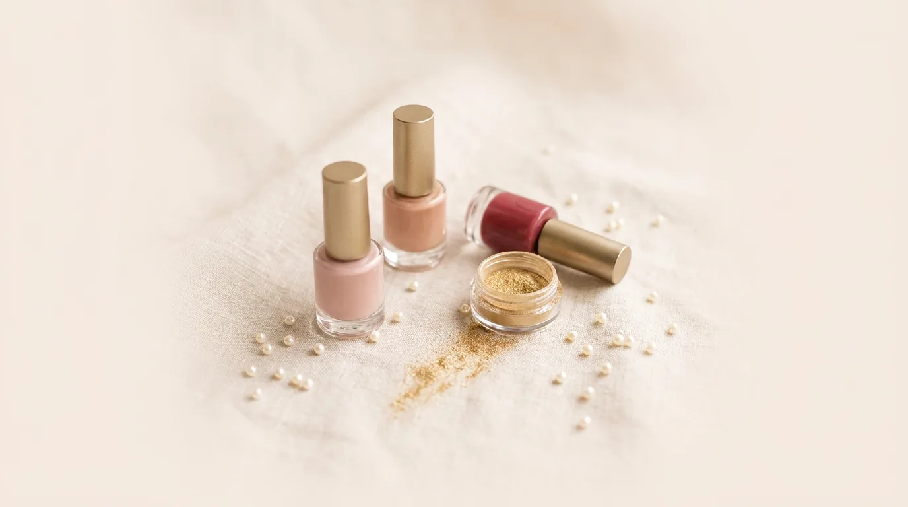
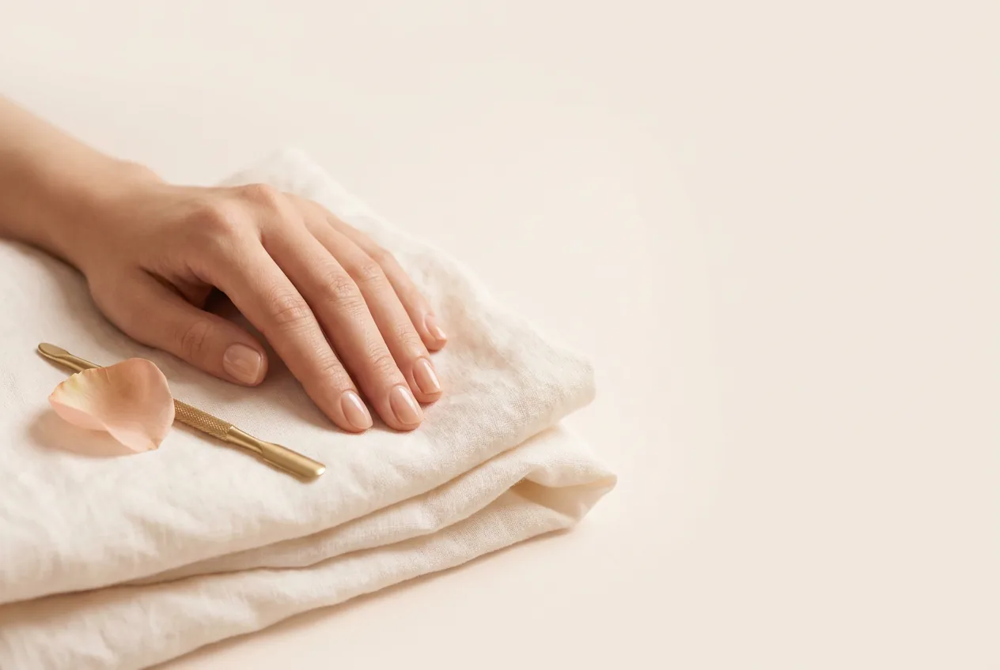
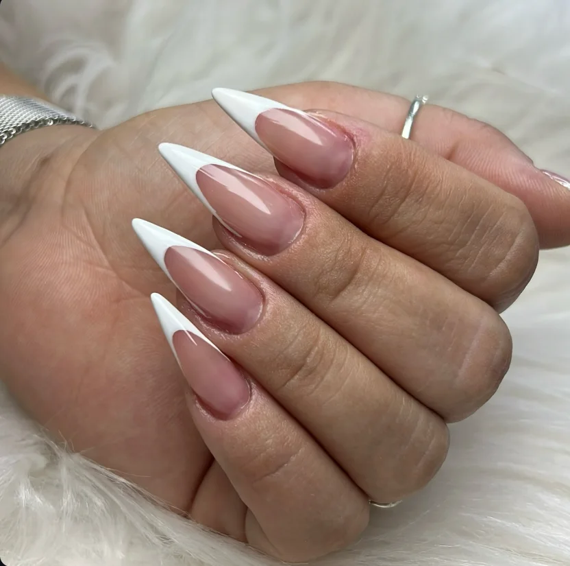
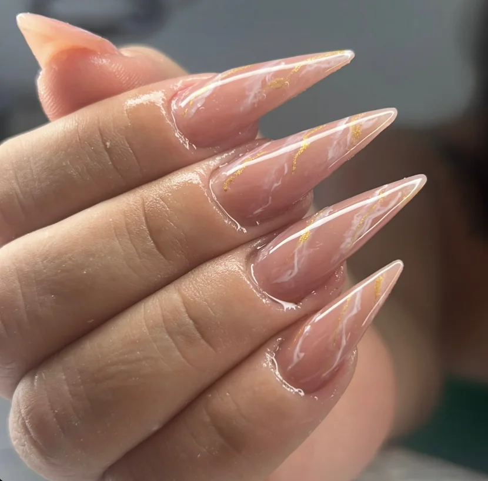
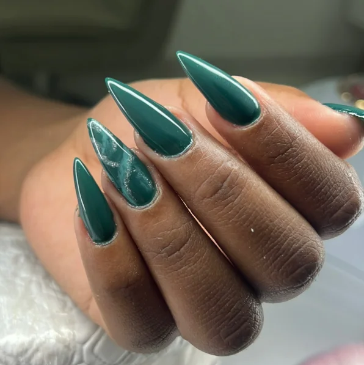
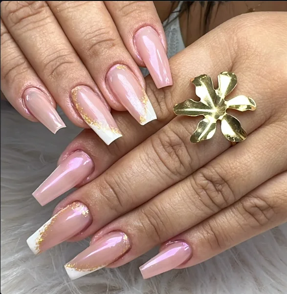
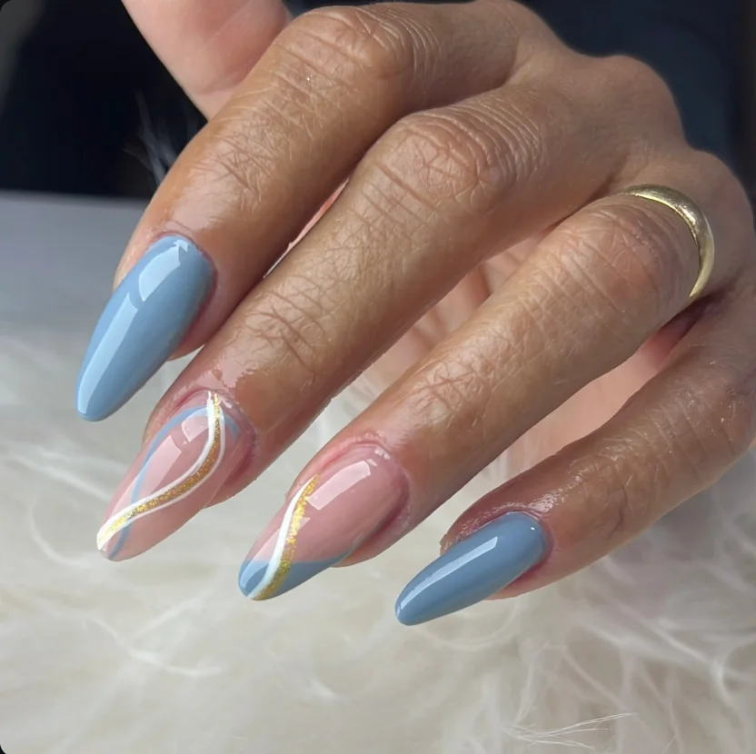
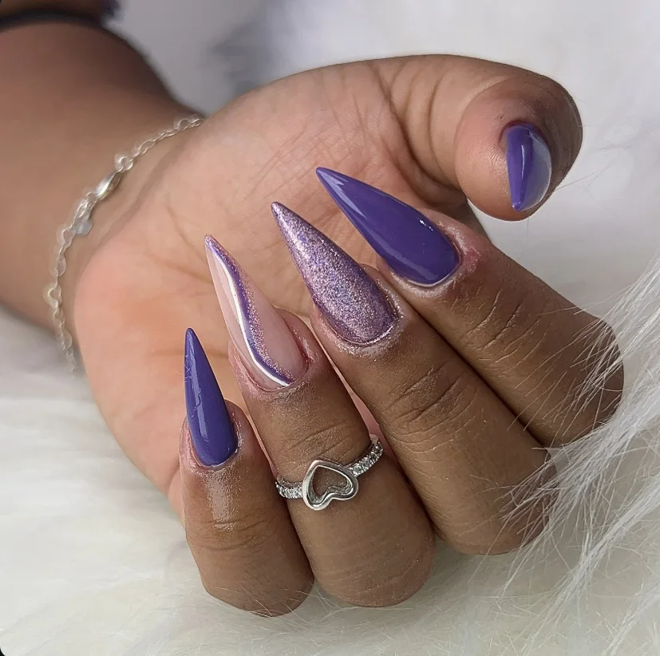
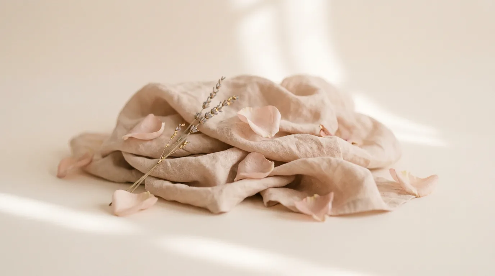

Unhas bem cuidadas, do jeitinho que a gente ama
Aline Bastos, nail designer em Colina de Laranjeiras, Serra (ES)
Especialista em alongamento em fibra de vidro e na recuperação de unhas roídas.
Agora é a sua vez de cuidar das mãos com carinho.
Agendar pelo WhatsAppUma sala só nossa, com conversa boa e capricho em cada unha
A gente atende no Ed. Essencial Escritórios, ao lado do Shopping Montserrat. Você chega, escolhe o formato e a cor com calma e sai de unha feita, do jeito que pediu.
Fibra de vidro e unhas roídas são as nossas especialidades. Babyboomer, francesinha e cromado também são casos de amor por aqui.
@alinebastosnaildesigner
O que a gente faz
-
Consultar valor
Alongamento em fibra de vidro
Comprimento e formato do seu jeito: stiletto, bailarina ou amendoada.
-
Consultar valor
Recuperação de unhas roídas
Para quem rói e quer voltar a ter unhas bonitas. Veja como funciona logo abaixo.
-
Consultar valor
Esmaltação em gel na unha natural
Unhas lindas por até 15 dias sem descascar.
-
Consultar valor
Babyboomer
Um clássico que amamos: o degradê do nude ao branco.
-
Consultar valor
Francesinha e francesa sorriso
A ponta branca de sempre, ou com cromo para um brilho a mais.
-
Consultar valor
Cromado
Pó cromo em verde, branco, roxo e outros tons.
-
Consultar valor
Unhas decoradas
Glitter, babyglitter com madrepérolas, pedrarias e nail art.

Roer as unhas não precisa ser para sempre
Muita cliente chega escondendo as mãos. A recuperação é feita com calma, no tempo da sua unha.
- Conversa e avaliaçãoA gente olha suas unhas e explica o que dá para fazer no seu caso.
- Proteção e formatoA unha ganha um formato bonito e fica protegida enquanto a natural cresce.
- ManutençãoVocê volta para acompanhar o crescimento até as unhas ficarem do jeito que sonhou.
Feitas aqui, por nós
Um pouco do que passa pela nossa mesa. Tem muito mais no Instagram.






Ao lado do Shopping Montserrat
Av. Eudes Scherrer Souza, 2230Ed. Essencial Escritórios, 5º andar, sala 510
Colina de Laranjeiras, Serra (ES)
CEP 29167-080
Atendimento com hora marcada pelo WhatsApp: (27) 99699-0665.
Abrir no Google Maps
Quer que a gente te chame?
Deixe seu nome e WhatsApp que a gente retorna para combinar seu horário. Se preferir, chame direto no WhatsApp.